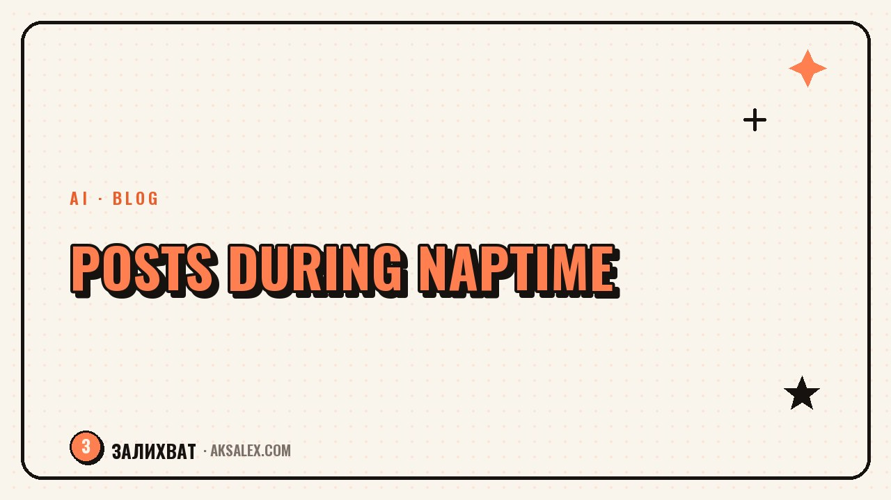

How to Write Posts in 20 Minutes While the Baby Naps

Why a post won't get written in 20 minutes
It's rarely because you type slowly. Two things eat the time: coming up with a topic from scratch, and trying to write it beautifully on the first pass. You sit down with an empty head, spend ten minutes wondering what to even write about, then another ten polishing the first sentence - and the baby is already stirring.
The fix is to separate thinking from writing. You prepare ideas and structure ahead of time, in the background, and in the nap window you only assemble the text on a ready-made frame. Then twenty minutes is more than enough.
A post gets written fast not when you type fast, but when you don't have to invent it from scratch.
The idea bank: think while your hands are busy
Post ideas don't come at your desk - they come on a walk, in the kitchen, while feeding the baby. Start a note on your phone and drop in any thought, a question from a follower, something that happened to you, an observation. Don't polish it - one line is enough.
What to put in the idea bank
- Questions people ask you in DMs and in real life.
- Moments from your day that stirred an emotion.
- Mistakes you made and learned from.
- Thoughts you felt like discussing with someone.
When the nap window comes, you don't stare into space - you open the bank and pick a ready topic. Half the work is already done in advance, in the minutes when you couldn't have written anyway.
A structure the post builds itself on
A blank page is scary; a template isn't. Keep a simple four-block frame in your head, and the text will fall into place almost automatically, without agonizing over every paragraph.
| Block | Job | Time |
|---|---|---|
| Hook | Grab them with the first line | 3 minutes |
| Core | Unpack one idea | 8 minutes |
| Example | Show it through your own story | 5 minutes |
| Question | Invite them into the comments | 2 minutes |
One idea per post - that matters. Don't try to cram in everything you know about the topic. One post, one idea, one example, one question. It writes faster that way, and it reads easier too.
AI as a draft, not the author
If the freeze hits anyway, hand the first draft to an AI. Give it a topic from your bank, your idea in a couple of lines, and ask it to build a post on the hook-core-example-question structure in a conversational tone. In a minute you'll have a frame that just needs to be brought to life in your own words.
The key is not to publish the draft as is - it sounds smooth but faceless. Your job is to write your voice into it: add a detail from your day, roughen up the too-even phrases, cut the corporate stiffness. AI takes away the fear of the blank page, but the text has to stay yours.
Common mistakes that steal your time
The first is editing as you write. Write the whole draft without stopping, and edit only at the very end. The second is chasing the perfect text in one clean pass: it paralyzes you. Give yourself the right to a messy first version.
- Editing every phrase on the fly - you lose momentum and your train of thought.
- Trying to fit three topics into one post - you get bogged down.
- Waiting for the perfect mood - the nap window runs out for nothing.
- Not keeping an idea bank - you start from scratch every time.
Set up the system once: an idea bank in your notes, a four-block structure, an AI on standby. Then even a short, unpredictable nap window turns into a finished post instead of wasted nerves.
Frequently Asked Questions
What do I do if I have no post ideas at all?
Start an idea bank in your phone's notes and drop in followers' questions, moments from your day, and your own observations. Ideas come on the go, not at your desk, so catch them right away.
How can I write fast if I'm not a writer?
Write on the hook-core-example-question structure and don't edit as you go. Draft the whole thing first, edits at the end. The template removes the fear of the blank page and speeds up assembling the text.
Can I write posts with AI?
AI is great as a draft: it builds a frame from your idea. But you shouldn't publish its text as is - bring it to life with your own voice, details, and natural phrasing.
How many topics should I keep in reserve?
It's comfortable when the idea bank holds at least 10-15 topics. Then you never sit down with an empty head and can pick whatever resonates today.
What if the baby wakes up before the post is finished?
Save the draft and come back to it in the next window. That's exactly why you prepare the idea and structure in advance - an unfinished text on a frame is easy to pick up from any point.
Enjoyed this one? Here's what to read next. The honest truth about earning on maternity leave with no investment: real ways through skills and content, not schemes.
Read the article →not by hand